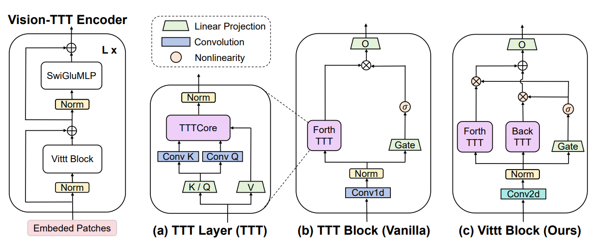

Vision-TTT: Efficient and Expressive Visual Representation Learning with Test-Time Training
arXiv (2026)

Hey, I'm Yuhao Shen, a direct PhD student at the College of Control Science and Engineering, Zhejiang University, advised by Prof. Cong Wang. I also received my B.E. degree from Zhejiang University.
My research lies in MLSys, LLM Inference, AI Infrastructure, and Edge Computing. Over the past two years, I have been deeply engaged in the field of speculative sampling and decoding. Outside academia, I enjoy playing basketball, video games, and photography.

|
Zhejiang University, Hangzhou, China Direct Ph.D. in Control Science and Engineering, 2024 - 2029 Advisor: Cong Wang |
|
|
Zhejiang University, Hangzhou, China Bachelor of Engineering in Control Science and Engineering, 2020 - 2024 Advisor: Cong Wang |

arXiv (2026)